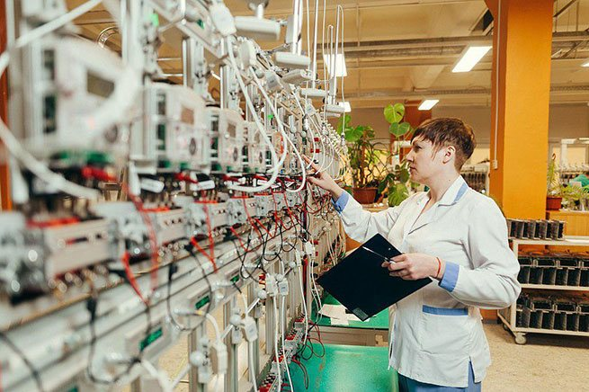

<!doctype html>
<html lang="uk">
<head>
<meta charset="utf-8">
<meta name="viewport" content="width=device-width, initial-scale=1">
<title>Центр оцінки відповідності та випробування лічильників — НІК</title>
<meta name="description" content="Акредитований НААУ випробувальний центр НІК-ЕЛЕКТРОНІКА: 28 видів випробувань лічильників електроенергії та випробування ПЗ ЗВТ. Атестат чинний до 2031 року.">
<meta name="robots" content="noindex">
<link rel="preconnect" href="https://fonts.googleapis.com">
<link rel="preconnect" href="https://fonts.gstatic.com" crossorigin="">
<link href="https://fonts.googleapis.com/css2?family=JetBrains+Mono:wght@400;500;600&amp;display=swap" rel="stylesheet">
<link rel="stylesheet" href="style.css">

<script src="https://cdn.jsdelivr.net/npm/morphdom@2.7.4/dist/morphdom-umd.min.js"></script>
<script src="runtime.js"></script>
<script src="shell.js"></script>
</head>
<body>
<div id="app"></div>
<script type="text/x-template" id="tpl">
<shell-top></shell-top>
<main id="main">
<section class="phead">
  <div class="wrap">
    <nav aria-label="Навігаційний ланцюжок"><ol class="crumbs"><li><a href="index.html">Головна</a></li><li><a href="about.html">Про нас</a></li><li><span aria-current="page">Центр оцінки відповідності</span></li></ol></nav>
    <span class="kick">ВИПРОБУВАЛЬНИЙ ЦЕНТР НІК-&#8288;ЕЛЕКТРОНІКА</span>
    <h1>Центр оцінки відповідності</h1>
    <p class="lead">Акредитовані випробування лічильників електричної енергії та програмного забезпечення засобів вимірювальної техніки</p>
    <nav class="tabs" aria-label="Розділ «Про нас»"><a href="about.html">Про компанію</a><a href="history.html">Історія</a><a href="career.html">Кар’єра</a><a href="conformity.html" aria-current="page">Центр оцінки відповідності</a><a href="partners.html">Партнери</a><a href="cases.html">Кейси та об’єкти</a></nav>
  </div>
</section>

<div class="wrap pbody">
    <div class="tiles">
      <div class="ftile"><b>29</b><p>видів випробувань (лічильники електроенергії та ПЗ)</p></div>
      <div class="ftile"><b>Welmec</b></div>
      <div class="ftile"><b>2031</b><p>рік, до якого чинний атестат про акредитацію</p></div>
      <div class="ftile dark"><svg width="28" height="28" viewBox="0 0 24 24" fill="none" stroke="currentColor" stroke-width="2" stroke-linecap="round" stroke-linejoin="round" aria-hidden="true"><circle cx="12" cy="12" r="9"></circle><path d="M3 12h18M12 3c3 3 3 15 0 18M12 3c-3 3-3 15 0 18"></path></svg><h3>EA MLA</h3><p>міжнародне визнання результатів випробувань</p></div>
    </div>
</div>

<section class="sec on-paper">
  <div class="wrap text-rows">
    <div class="about-cols"><h2 class="h2">Випробувальний центр</h2><div class="art"><p>Наш випробувальний центр <b class="kw">акредитований</b> Національним агентством з акредитації України на відповідність ДСТУ&nbsp;EN&nbsp;ISO/IEC&nbsp;17025:2019 у сфері випробувань лічильників електричної енергії та програмного забезпечення засобів вимірювальної техніки.</p><p>Це означає, що результати наших випробувань мають офіційно визнану достовірність.</p><p>Ми випробовуємо <b class="kw">не лише власну продукцію</b>. До нас звертаються виробники, імпортери й дистриб’ютори лічильників, органи з оцінки відповідності та розробники програмного забезпечення для засобів вимірювальної техніки.</p></div></div>
    <div class="about-cols"><h2 class="h2">Атестат про акредитацію</h2><div class="art"><div class="accr"><div class="accr-top"><span class="accr-icon"><svg width="28" height="28" viewBox="0 0 24 24" fill="none" stroke="currentColor" stroke-width="2" stroke-linecap="round" stroke-linejoin="round" aria-hidden="true"><path d="M14 3H7a2 2 0 0 0-2 2v14a2 2 0 0 0 2 2h10a2 2 0 0 0 2-2V8z"></path><path d="M14 3v5h5M9 13h6M9 17h4"></path></svg></span><div><span class="accr-lab">Номер атестата</span><b class="accr-no">202502</b></div><div class="accr-until"><span class="accr-lab">Чинний до</span><b>29 вересня 2031 року</b></div></div><dl class="accr-kv"><div><dt>Орган з акредитації</dt><dd>Національне агентство з акредитації України (НААУ)</dd></div><div><dt>Стандарт</dt><dd>ДСТУ EN ISO/IEC 17025:2019</dd></div><div><dt>Дата реєстрації</dt><dd>30 вересня 2026 року</dd></div><div><dt>Сфера</dt><dd>Лічильники електричної енергії та програмне забезпечення засобів вимірювальної техніки</dd></div><div><dt>Додаток</dt><dd>Сфера акредитації на 19 аркушах</dd></div></dl></div><p>НААУ — підписант Угоди EA MLA та Угоди Global ACI MRA у сфері «Випробування». Тому наші протоколи видаються в системі акредитації, визнаній на європейському та міжнародному рівнях.</p><p>Чинність атестата можна перевірити у відкритому реєстрі НААУ [посилання на запис у реєстрі].</p></div></div>
    <div class="split-list">
      <div>
        <div class="shead"><div><h2 class="h2">Неупередженість — не обіцянка, а процедура</h2></div></div>
        <p class="lead flow-lead">Вимоги ДСТУ&nbsp;EN&nbsp;ISO/IEC&nbsp;17025:2019 щодо неупередженості та конфіденційності є предметом акредитаційної оцінки. На практиці це означає чотири речі.</p>
      </div>
      <ol class="nrows">
        <li><b>01</b><div><h3>Окремий статус</h3><p>Центр відокремлений від виробничих підрозділів</p></div></li>
        <li><b>02</b><div><h3>NDA до початку</h3><p>Угода підписується перед передачею зразків</p></div></li>
        <li><b>03</b><div><h3>Знеособлення</h3><p>Зразки маркуються внутрішніми кодами</p></div></li>
        <li class="dark"><b>04</b><div><h3>Усі необхідні документи</h3><p>Надаємо верифіковані підтвердження щодо якості усіх наших випробувань та простежуваності</p></div></li>
      </ol>
    </div>
  </div>
</section>

<section class="figs">
  <div class="wrap">
    <div class="shead"><div><span class="kick on-dark">СФЕРА АКРЕДИТАЦІЇ</span><h2 class="h2">Два напрями робіт</h2></div></div>
    <div class="ngrid pair">
      <article class="service"><i class="bcard-icon"><svg width="28" height="28" viewBox="0 0 24 24" fill="none" stroke="currentColor" stroke-width="2" stroke-linecap="round" stroke-linejoin="round" aria-hidden="true"><path d="M13 2 4 14h7l-1 8 9-12h-7z"></path></svg></i><h3>Лічильники електричної енергії</h3><b class="val">28 видів випробувань</b><p class="cd">Випробування, що стосуються безпеки, загальні вимоги щодо точності, на несприйнятливість до інших впливних чинників (гармонік, зміни напруги тощо)</p></article>
      <article class="service"><i class="bcard-icon"><svg width="28" height="28" viewBox="0 0 24 24" fill="none" stroke="currentColor" stroke-width="2" stroke-linecap="round" stroke-linejoin="round" aria-hidden="true"><path d="m8 8-4 4 4 4M16 8l4 4-4 4M14 5l-4 14"></path></svg></i><h3>Програмне забезпечення ЗВТ</h3><b class="val">3 документи</b><p class="cd">Законодавчо значуще ПЗ засобів вимірювальної техніки за національними, міжнародними та європейськими вимогами.</p></article>
    </div>
  </div>
</section>

<section class="sec">
  <div class="wrap text-rows">
    <div class="about-cols"><h2 class="h2">Навіщо лічильнику випробування</h2><div class="art"><p>Лічильники активної електричної енергії — законодавчо регульовані засоби вимірювальної техніки: категорія MI-003 Технічного регламенту засобів вимірювальної техніки, затвердженого постановою КМУ від 24.02.2016 №&nbsp;163.</p><p>Без оцінки відповідності лічильник не можна розмитнити, продати та ввести в експлуатацію. А для сертифіката потрібен протокол акредитованої лабораторії.</p></div></div>
  </div>
</section>

<section class="sec on-paper">
  <div class="wrap">
    <div class="shead"><div><h2 class="h2">Як лічильник потрапляє на ринок України</h2></div></div>
    <p class="lead flow-lead">Лічильники електричної енергії — законодавчо регульовані засоби вимірювальної техніки. Лічильник <b class="kw">повинен пройти сертифікацію</b>. До нас може звернутися як ООВ, так і виробник чи імпортер.</p>
    <div class="flow-split">
      <figure class="flow-photo"></figure>
      <ol class="flow">
        <li><span class="flow-mark"><svg width="24" height="24" viewBox="0 0 24 24" fill="none" stroke="currentColor" stroke-width="2" stroke-linecap="round" stroke-linejoin="round" aria-hidden="true"><circle cx="9" cy="8" r="4"></circle><path d="M2 21v-1a7 7 0 0 1 14 0v1M16 4.5a4 4 0 0 1 0 7M19 15a7 7 0 0 1 3 5v1"></path></svg></span><small>КРОК 1</small><h3>Виробник або імпортер</h3><p>Планує постачати прилад на український ринок</p></li>
        <li><span class="flow-mark"><svg width="24" height="24" viewBox="0 0 24 24" fill="none" stroke="currentColor" stroke-width="2" stroke-linecap="round" stroke-linejoin="round" aria-hidden="true"><path d="M12 3l2.4 1.8 3-.2.9 2.9 2.5 1.7-1 2.8 1 2.8-2.5 1.7-.9 2.9-3-.2L12 21l-2.4-1.8-3 .2-.9-2.9-2.5-1.7 1-2.8-1-2.8 2.5-1.7.9-2.9 3 .2z"></path><path d="M8.5 12l2.5 2.5 4.5-5"></path></svg></span><small>КРОК 2</small><h3>Орган з оцінки відповідності</h3><p>Обирає процедуру та лабораторію</p></li>
        <li class="us"><span class="flow-mark"><svg width="24" height="24" viewBox="0 0 24 24" fill="none" stroke="currentColor" stroke-width="2" stroke-linecap="round" stroke-linejoin="round" aria-hidden="true"><rect x="3" y="8" width="18" height="12" rx="2"></rect><path d="M8 8V6a2 2 0 0 1 2-2h4a2 2 0 0 1 2 2v2M3 14h18M8 13v2M16 13v2"></path></svg></span><small>КРОК 3 — ЦЕ МИ</small><h3>Випробувальний центр</h3><p>Випробування і протокол</p></li>
        <li><span class="flow-mark"><svg width="24" height="24" viewBox="0 0 24 24" fill="none" stroke="currentColor" stroke-width="2" stroke-linecap="round" stroke-linejoin="round" aria-hidden="true"><path d="M12 3l2.4 1.8 3-.2.9 2.9 2.5 1.7-1 2.8 1 2.8-2.5 1.7-.9 2.9-3-.2L12 21l-2.4-1.8-3 .2-.9-2.9-2.5-1.7 1-2.8-1-2.8 2.5-1.7.9-2.9 3 .2z"></path><path d="M8.5 12l2.5 2.5 4.5-5"></path></svg></span><small>КРОК 4</small><h3>Орган з оцінки відповідності</h3></li>
        <li><span class="flow-mark"><svg width="24" height="24" viewBox="0 0 24 24" fill="none" stroke="currentColor" stroke-width="2" stroke-linecap="round" stroke-linejoin="round" aria-hidden="true"><circle cx="12" cy="12" r="9"></circle><path d="M8 12.5l2.7 2.7L16 9.5"></path></svg></span><small>КРОК 5</small><h3>Сертифікат</h3><p>Продаж, митниця, експлуатація</p></li>
      </ol>
    </div>
  </div>
</section>

<section class="sec">
  <div class="wrap text-rows">
    <div class="about-cols stack"><h2 class="h2">Випробування лічильників</h2><div class="art">
      <div class="tabs ttabs" role="tablist" aria-label="Групи випробувань">
        <button type="button" role="tab" id="tt-0" aria-controls="tp-0" aria-selected="{{tests.0.on}}" onClick="{{tests.0.pick}}">Метрологічна точність<span class="cnt">7</span></button>
        <button type="button" role="tab" id="tt-1" aria-controls="tp-1" aria-selected="{{tests.1.on}}" onClick="{{tests.1.pick}}">Точність у реальній мережі<span class="cnt">13</span></button>
        <button type="button" role="tab" id="tt-2" aria-controls="tp-2" aria-selected="{{tests.2.on}}" onClick="{{tests.2.pick}}">Надійність в експлуатації<span class="cnt">5</span></button>
        <button type="button" role="tab" id="tt-3" aria-controls="tp-3" aria-selected="{{tests.3.on}}" onClick="{{tests.3.pick}}">Безпека, споживання, маркування<span class="cnt">3</span></button>
      </div>
      <div class="tpanel {{tests.0.cls}}" role="tabpanel" id="tp-0" aria-labelledby="tt-0"><table class="dtable"><thead><tr><th scope="col">№</th><th scope="col">Випробування</th><th scope="col">Що підтверджує</th></tr></thead><tbody><tr><td><code class="tcode">1.4</code></td><td>Передатне число (стала)</td><td>Імпульсний вихід відповідає сталій</td></tr><tr><td><code class="tcode">1.5</code></td><td>Початковий запуск</td><td>Прилад стартує за нормований час</td></tr><tr><td><code class="tcode">1.6</code></td><td>Відсутність самоходу</td><td>Без навантаження енергія не накручується</td></tr><tr><td><code class="tcode">1.7</code></td><td>Поріг чутливості</td><td>Облік при мінімальному струмі</td></tr><tr><td><code class="tcode">1.8</code></td><td>Збіжність</td><td>Повторюваність результатів</td></tr><tr><td><code class="tcode">1.9</code></td><td>Межі похибки за струмом</td><td>Клас точності в робочому діапазоні</td></tr><tr><td><code class="tcode">1.10</code></td><td>Точність відліку часу</td><td>Годинник для багатозонного обліку</td></tr></tbody></table></div>
      <div class="tpanel {{tests.1.cls}}" role="tabpanel" id="tp-1" aria-labelledby="tt-1"><p class="tlabel">Спотворення форми кривої:</p><ul class="feat"><li><span><code class="tcode">1.11</code>Гармоніки в колах струму та напруги</span></li><li><span><code class="tcode">1.12</code>Інтергармоніки в колі струму</span></li><li><span><code class="tcode">1.13</code>Непарні гармоніки в колі струму</span></li><li><span><code class="tcode">1.14</code>Постійний струм і парні гармоніки</span></li></ul><p class="tsmall">Зокрема, перевіряємо стійкість до типових схем спотворення обліку випрямленим сигналом.</p><p class="tlabel">Аномалії мережі та зовнішні впливи:</p><ul class="feat"><li><span><code class="tcode">1.15</code>Зміна напруги</span></li><li><span><code class="tcode">1.16</code>Зміна температури середовища</span></li><li><span><code class="tcode">1.17</code>Переривання фазної напруги</span></li><li><span><code class="tcode">1.18</code>Зміна частоти</span></li><li><span><code class="tcode">1.19</code>Зворотна послідовність фаз</span></li><li><span><code class="tcode">1.20</code>Зміна допоміжної напруги</span></li><li><span><code class="tcode">1.21</code>Робота допоміжних пристроїв</span></li><li><span><code class="tcode">1.24</code>Швидкі зміни струму навантаження</span></li><li><span><code class="tcode">1.25</code>Замикання на землю</span></li></ul></div>
      <div class="tpanel {{tests.2.cls}}" role="tabpanel" id="tp-2" aria-labelledby="tt-2"><ul class="feat"><li><span><code class="tcode">1.22</code>Короткочасні перевантаження струмом</span></li><li><span><code class="tcode">1.23</code>Самонагрівання</span></li><li><span><code class="tcode">1.26</code>Випробування на сухе тепло</span></li><li><span><code class="tcode">1.27</code>Випробування на холод</span></li><li><span><code class="tcode">1.28</code>Випробування на довговічність</span></li></ul><p class="tsmall">Довговічність — за ДСТУ&nbsp;EN&nbsp;62059-32-1:2016.</p></div>
      <div class="tpanel {{tests.3.cls}}" role="tabpanel" id="tp-3" aria-labelledby="tt-3"><ul class="feat"><li><span><code class="tcode">1.1</code>Випробування, що стосуються безпеки</span></li><li><span><code class="tcode">1.2</code>Потужність власного споживання</span></li><li><span><code class="tcode">1.3</code>Маркування лічильника</span></li></ul><p class="tsmall">Безпека — за ДСТУ&nbsp;EN&nbsp;62052-31:2022 та ДСТУ&nbsp;EN&nbsp;50470-3:2022.</p></div>
      <p class="tnote">Нумерація — за додатком до атестата про акредитацію №&nbsp;202502. Повний перелік 28 позицій надаємо за запитом.</p>
    </div></div>
    <div class="about-cols"><h2 class="h2">Випробування програмного забезпечення</h2><div class="art"><p>Перевіряємо законодавчо значуще ПЗ:</p><ul class="feat"><li><span>вимірювання та облік енергії;</span></li><li><span>тарифікацію;</span></li><li><span>журнал подій;</span></li><li><span>збереження даних під час оновлення;</span></li><li><span>розділення та захист від змін.</span></li></ul><p>А також функції поза метрологією: інтерфейси зв’язку, дисплей і сервісні режими, оновлення прошивки.</p><p>Нормативні документи:<br>ДСТУ 7363:2013 (національні вимоги),<br>ДСТУ OIML D 31:2018 (міжнародні вимоги OIML),<br>WELMEC 7.2:2020 (європейський документ до директиви MID).</p></div></div>
    <div class="about-cols"><h2 class="h2">Нормативна база</h2><div class="art"><p>У сфері акредитації — чинні й попередні редакції стандартів. Тож ми проводимо випробування і для нової сертифікації, і для підтримки виробів, що вже на ринку.</p><table class="dtable"><thead><tr><th scope="col">Стандарт</th><th scope="col">Про що</th></tr></thead><tbody><tr><td class="tstd"><span class="std-part">ДСТУ EN IEC 62052-11:2024</span> · <span class="std-part">EN 62052-11:2015</span></td><td>Загальні вимоги та умови випробувань</td></tr><tr><td class="tstd"><span class="std-part">ДСТУ EN 62052-31:2022</span></td><td>Вимоги безпеки та випробування на безпеку</td></tr><tr><td class="tstd"><span class="std-part">ДСТУ EN IEC 62053-21</span> · <span class="std-part">62053-22</span></td><td>Активна енергія: класи 0,5–2 та 0,1S–0,5S</td></tr><tr class="{{normsCls}}"><td class="tstd"><span class="std-part">ДСТУ EN IEC 62053-23</span> · <span class="std-part">62053-24</span></td><td>Реактивна енергія, зокрема за основною гармонікою</td></tr><tr class="{{normsCls}}"><td class="tstd"><span class="std-part">ДСТУ EN 50470-3:2022</span></td><td>Європейська серія: класи A, B, C</td></tr><tr class="{{normsCls}}"><td class="tstd"><span class="std-part">ДСТУ EN 62054-21:2015</span></td><td>Реле часу, багатозонний облік</td></tr><tr class="{{normsCls}}"><td class="tstd"><span class="std-part">ДСТУ EN 62059-32-1:2016</span></td><td>Надійність і довговічність</td></tr><tr class="{{normsCls}}"><td class="tstd"><span class="std-part">ДСТУ 7363:2013</span> · <span class="std-part">OIML D 31</span> · <span class="std-part">WELMEC 7.2:2020</span></td><td>Програмне забезпечення ЗВТ</td></tr></tbody></table><button type="button" class="pmore smore" aria-expanded="{{normsExp}}" onClick="{{toggleNorms}}">{{normsLabel}}</button></div></div>
    <div class="about-cols"><h2 class="h2">Для кого</h2><div class="art"><h3>Органам з оцінки відповідності: лабораторія, яку можна внести до свого переліку</h3><ul class="feat"><li><span>Випробування лічильників за 28 позиціями та ПЗ засобів вимірювальної техніки.</span></li><li><span>Чинні й попередні редакції стандартів, серії IEC 62053 та EN 50470 одночасно.</span></li><li><span>Програму випробувань узгоджуємо заздалегідь, угода про конфіденційність — стандартний крок.</span></li><li><span>Представник замовника може бути присутнім, протокол містить посилання на пункти стандартів.</span></li></ul><p>Надамо повний пакет для внесення до вашого переліку лабораторій: атестат, додаток зі сферою, відомості про обладнання та персонал.</p></div></div>
  </div>
</section>

<section class="sec on-paper">
  <div class="wrap">
    <div class="shead"><div><span class="kick">ДЛЯ ІМПОРТЕРІВ І ДИСТРИБ’ЮТОРІВ</span><h2 class="h2">Випробування в Україні для імпортованих приладів</h2></div></div>
    <div class="benefit-split">
      <div>
        <p class="lead">Кожне випробування триває рівно стільки, скільки вимагає методика, без затримок.</p>
        <div class="art tiles-note"><ul class="feat"><li><span>Програма випробувань узгоджується заздалегідь.</span></li><li><span>Узгоджуємо час проведення випробування (притримуємося домовлених термінів)</span></li><li><span>Угода про конфіденційність як стандартний крок.</span></li><li><span>Протокол із посиланням на пункти стандартів.</span></li></ul></div>
      </div>
      <div class="bcards">
        <div class="bcard"><span class="bcard-icon"><svg width="28" height="28" viewBox="0 0 24 24" fill="none" stroke="currentColor" stroke-width="2" stroke-linecap="round" stroke-linejoin="round" aria-hidden="true"><circle cx="12" cy="12" r="9"></circle><path d="m8 12 3 3 5-6"></path></svg></span><h3>Протокол, який приймають</h3><p>Документ акредитованої лабораторії для оцінки відповідності</p></div>
        <div class="bcard"><span class="bcard-icon"><svg width="28" height="28" viewBox="0 0 24 24" fill="none" stroke="currentColor" stroke-width="2" stroke-linecap="round" stroke-linejoin="round" aria-hidden="true"><circle cx="12" cy="12" r="9"></circle><path d="M3 12h18M12 3c3 3 3 15 0 18M12 3c-3 3-3 15 0 18"></path></svg></span><h3>Будь-яка серія</h3><p>Проводимо випробовування приладів за IEC 62053, і EN 50470</p></div>
        <div class="bcard dark"><span class="bcard-icon"><svg width="28" height="28" viewBox="0 0 24 24" fill="none" stroke="currentColor" stroke-width="2" stroke-linecap="round" stroke-linejoin="round" aria-hidden="true"><path d="M21 12a8 8 0 0 1-11.6 7.1L4 20l1-4.6A8 8 0 1 1 21 12z"></path></svg></span><h3>Одна контактна особа</h3><p>Програма випробувань узгоджується до початку робіт</p></div>
      </div>
    </div>
  </div>
</section>

<section class="sec">
  <div class="wrap text-rows">
    <div class="about-cols"><h2 class="h2">Як замовити випробування</h2><div class="art"><ol class="nums"><li><span>Надішліть перелік приладів або опис програмного забезпечення.</span></li><li><span>Узгодимо програму випробувань, строки й вартість. За потреби підпишемо угоду про конфіденційність.</span></li><li><span>Проведемо випробування та видамо протокол.</span></li></ol><p>За запитом надаємо копію атестата з додатком на 19 аркушах, повний перелік позицій випробувань, відомості про обладнання та комерційну пропозицію під вашу програму.</p><div class="contact-card"><h3>Контактна особа</h3><div class="clist"><div><i><svg width="20" height="20" viewBox="0 0 24 24" fill="none" stroke="currentColor" stroke-width="2" stroke-linecap="round" stroke-linejoin="round" aria-hidden="true"><circle cx="12" cy="8" r="4"></circle><path d="M4 21c1.5-4 4.5-6 8-6s6.5 2 8 6"></path></svg></i><span>Світлана Паталах<small>Начальниця випробувального центру</small></span></div><a href="mailto:svitlana.patalakh@nikel.com.ua"><i><svg width="20" height="20" viewBox="0 0 24 24" fill="none" stroke="currentColor" stroke-width="2" stroke-linecap="round" stroke-linejoin="round" aria-hidden="true"><rect x="3" y="5" width="18" height="14" rx="2"></rect><path d="M3 7l9 6 9-6"></path></svg></i><span>svitlana.patalakh@<wbr>nikel.com.ua<small>Електронна пошта</small></span></a></div><a href="index.html?topic=test#contact" class="btn btn-red">Замовити випробування<svg width="18" height="18" viewBox="0 0 24 24" fill="none" stroke="currentColor" stroke-width="2.2" stroke-linecap="round" stroke-linejoin="round" aria-hidden="true"><path d="M5 12h14M13 6l6 6-6 6"></path></svg></a></div></div></div>
    <div class="about-cols"><h2 class="h2">Часті питання</h2><div class="art"><div class="qa"><details data-dc-keep><summary><span>Це повірка лічильників?</span><svg class="chev" width="20" height="20" viewBox="0 0 24 24" fill="none" stroke="currentColor" stroke-width="2.4" stroke-linecap="round" stroke-linejoin="round" aria-hidden="true"><path d="m6 9 6 6 6-6"></path></svg></summary><p>Ні. Ми проводимо випробування. Повірка приладів в експлуатації до нашої сфери акредитації не входить.</p></details><details data-dc-keep><summary><span>Скільки триває випробування?</span><svg class="chev" width="20" height="20" viewBox="0 0 24 24" fill="none" stroke="currentColor" stroke-width="2.4" stroke-linecap="round" stroke-linejoin="round" aria-hidden="true"><path d="m6 9 6 6 6-6"></path></svg></summary><p>Залежить від програми. Строк називаємо після узгодження переліку позицій. [типові строки — уточнити]</p></details><details data-dc-keep><summary><span>Скільки це коштує?</span><svg class="chev" width="20" height="20" viewBox="0 0 24 24" fill="none" stroke="currentColor" stroke-width="2.4" stroke-linecap="round" stroke-linejoin="round" aria-hidden="true"><path d="m6 9 6 6 6-6"></path></svg></summary><p>Вартість залежить від програми випробувань. Комерційну пропозицію готуємо на запит.</p></details><details data-dc-keep><summary><span>Якою мовою протокол?</span><svg class="chev" width="20" height="20" viewBox="0 0 24 24" fill="none" stroke="currentColor" stroke-width="2.4" stroke-linecap="round" stroke-linejoin="round" aria-hidden="true"><path d="m6 9 6 6 6-6"></path></svg></summary><p>Українською.</p></details><details data-dc-keep><summary><span>Чи захищена наша інформація?</span><svg class="chev" width="20" height="20" viewBox="0 0 24 24" fill="none" stroke="currentColor" stroke-width="2.4" stroke-linecap="round" stroke-linejoin="round" aria-hidden="true"><path d="m6 9 6 6 6-6"></path></svg></summary><p>Так. Конфіденційність — вимога ДСТУ&nbsp;EN&nbsp;ISO/IEC&nbsp;17025:2019, угоду про конфіденційність підписуємо до передачі зразків.</p></details><details data-dc-keep><summary><span>Що робити, якщо потрібне випробування поза сферою акредитації?</span><svg class="chev" width="20" height="20" viewBox="0 0 24 24" fill="none" stroke="currentColor" stroke-width="2.4" stroke-linecap="round" stroke-linejoin="round" aria-hidden="true"><path d="m6 9 6 6 6-6"></path></svg></summary><p>Ми скажемо про це прямо й підкажемо лабораторію. Поза атестатом нічого не обіцяємо.</p></details></div></div></div>
  </div>
</section>

<section class="sec on-paper" aria-labelledby="h-certs">
  <div class="wrap">
    <div class="shead"><div><h2 class="h2" id="h-certs">Сертифікати компанії</h2></div></div>
    <div class="certs">
      <sc-for list="{{certs}}" as="c" hint-placeholder-count="4">
        <article class="cert">
          <h3>{{c.t}}</h3>
          <p class="cd">{{c.d}}</p>
          <a href="#" class="cgo" aria-label="Сертифікат PDF: {{c.t}}">PDF<svg width="16" height="16" viewBox="0 0 24 24" fill="none" stroke="currentColor" stroke-width="2.2" stroke-linecap="round" stroke-linejoin="round" aria-hidden="true"><path d="M5 12h14M13 6l6 6-6 6"></path></svg></a>
        </article>
      </sc-for>
    </div>
  </div>
</section>

<section class="sec">
  <div class="wrap text-rows">
    <div class="about-cols"><h2 class="h2">Політика щодо дитячої праці</h2><div class="art"><p>НІК-&#8288;ЕЛЕКТРОНІКА не використовує дитячу працю в жодній формі.</p><p>Ми не приймаємо на роботу осіб, молодших за мінімальний вік, встановлений законодавством України, і дотримуємося принципів конвенцій Міжнародної організації праці №&nbsp;138 про мінімальний вік і №&nbsp;182 про найгірші форми дитячої праці.</p></div></div>
  </div>
</section>
</main>
<shell-bottom></shell-bottom>
</script>
<script>
window.DC_BLOBS = {};
class Component extends DCLogic {
  constructor(props) {
    super(props);
    this.state = { cookie: true, menu: false };
  }
  renderVals() {
    const certs = [
      { t: 'ISO\u00a09001:2015', d: 'Система управління якістю' },
      { t: 'ISO\u00a014001:2015', d: 'Система екологічного управління' },
      { t: 'ISO/IEC 27001:2022', d: 'Система управління інформаційною безпекою' },
      { t: 'ДСТУ EN ISO/IEC 17025:2019', d: 'Акредитація випробувального центру НААУ' }
    ];
    // meter tests: one group shown at a time; a tab half out of its row on a phone is scrolled into view when picked
    const tab = this.state.tab || 0;
    const tests = [0, 1, 2, 3].map((i) => ({ on: String(i === tab), cls: i === tab ? '' : 'folded', pick: () => { this.setState({ tab: i }); requestAnimationFrame(() => { const b = document.getElementById('tt-' + i); if (b) b.scrollIntoView({ block: 'nearest', inline: 'nearest' }); }); } }));
    // standards: the first three rows, the rest behind «Показати ще (N)», as the catalog filters do
    const normsOpen = !!this.state.normsOpen, NORMS_MORE = 5;
    return Object.assign(this.base(this.state), { certs, tests, normsCls: normsOpen ? '' : 'folded', normsExp: String(normsOpen),
      normsLabel: normsOpen ? 'Згорнути' : 'Показати ще (' + NORMS_MORE + ')', toggleNorms: () => this.setState({ normsOpen: !normsOpen }) });
  }
}

DC.mount(Component);
</script>
</body>
</html>
